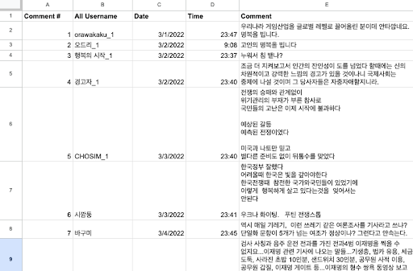

CIB Mango Tree
A Civic Tech DC Project
Data Preparation
Steps to prepare your data for analysis
Note: The CIB Mango Tree does not scrape your social media activity directly. Instead, it is used in the post-analysis
phase to help you recognize patterns of CIB activity. If you need assistance with scraping data, you can find various tools online, such as
Quick Scraper.
When you scrape your social media activity, the resulting dataset will be likely in a .csv, .json, or .xlsx format. The specific attributes of these columns are called parameters. The CIB Mango Tree's command line interface provides a set of tests that can analyze on your data.
These tests currently rely on the five specific parameters below:
When you scrape your social media activity, the resulting dataset will be likely in a .csv, .json, or .xlsx format. The specific attributes of these columns are called parameters. The CIB Mango Tree's command line interface provides a set of tests that can analyze on your data.
These tests currently rely on the five specific parameters below:
Unique Post Number
A unique number applied to every scraped post/comment
Unique Post Username
The unique username of the account that made the post/comment
Post Date
The date that an individual post/comment was made
Post Time
The time of day that an individual post/comment was made
Post Content
The written content of an individual post/comment
Step 1: Understand your database’s columns
To ensure your database works with CIB Mango’s Tree, you need to rename your columns with our five standard parameters.
Don't worry—your columns are probably very similar to these parameters!
For instance, if your column is labeled “account name” or “User ID,” it likely corresponds to “Unique Username.” Use your best judgment when matching them up or if you used scraping software, reach out to them for help in assigning the correct parameters.
To see how this looks check out Sample Database #1 and Sample Database 2.
For instance, if your column is labeled “account name” or “User ID,” it likely corresponds to “Unique Username.” Use your best judgment when matching them up or if you used scraping software, reach out to them for help in assigning the correct parameters.
To see how this looks check out Sample Database #1 and Sample Database 2.
Before
| Comment # | RealUsername | Date Posted | Time Posted | Comment |
|---|---|---|---|---|
| 1 | snipcerebrum | 5/2/2024 | 6:01 | Watermelon cures cancer! |
| 2 | postboxinterest | 5/3/2024 | 13:56 | Kiwi from Florida is poison |
| 3 | tautburden | 5/3/2024 | 15:28 | Mango and IPA beer causes rashes |
| 4 | frazzledsplatter | 5/5/2024 | 3:50 | Don’t believe the doctors about apples |
After
| Unique Post Number | Unique Post Username | Post Date | Post Time | Post Content |
|---|---|---|---|---|
| 1 | snipcerebrum | 5/2/2024 | 6:01 | Watermelon cures cancer! |
| 2 | postboxinterest | 5/3/2024 | 13:56 | Kiwi from Florida is poison |
| 3 | tautburden | 5/3/2024 | 15:28 | Mango and IPA beer causes rashes |
| 4 | frazzledsplatter | 5/5/2024 | 3:50 | Don’t believe the doctors about apples |
Before
After

Important!
CIB Mango Tree offers three tests that allow you to look for unique patterns in your data.
These tests require different parameter names than the five above; please refer to the Test Library.
Step 2: Change your columns with the CLI
Now that you're ready to update your columns, you can do this using the CIB Mango Tree’s Command Line Interface (CLI).
The CLI will show you which columns in your dataset it thinks match the required parameters.
You will be able to approve these suggestions or make corrections.
This screenshot shows how the CLI will prompt you.
Once you have correctly mapped your dataset columns to the needed parameters, you can run the tests and receive the analysis!
Once you have correctly mapped your dataset columns to the needed parameters, you can run the tests and receive the analysis!